Bachelor of Finance (Islamic Finance), Honours
Albukhary International University
MalaysiaCurrent studiesAssalamu Alaikum, I'm
Islamic Finance Student / Researcher
Exploring ethical finance and purposeful innovation. I focus on Shariah-compliant business development, waqf-based social finance, and creating opportunities for communities to thrive.
An interdisciplinary journey connecting knowledge, ethical responsibility, and community impact.
I’m an Islamic Finance undergraduate at Albukhary International University (AIU) with an interdisciplinary foundation in Islamic Finance, Arabic Language, and Islamic Studies.
My work brings together Islamic finance research, Shariah-compliant business development, social entrepreneurship, and student leadership. Through international academic programs and consulting-oriented projects, I have developed a strong interest in practical, values-based financial solutions.
As the founder of AmanahX, a waqf-based financing initiative, I’m exploring ways to improve students’ access to essential digital resources. I also serve as President of the Finance Students’ Society (BFIF) and Acting President of the Al-Quran & Islamic Club (AL-QISC) at AIU.
Bringing together finance, computing, language, and Islamic studies.
Albukhary International University
MalaysiaCurrent studiesAlbukhary International University
MalaysiaIslamic Call University, Senegal Branch
Senegal BranchSpecialized finance expertise supported by research, communication, and digital tools.
Projects and research exploring how Islamic finance can strengthen institutions and empower communities.
Waqf–Murabahah Based Financing
A Shariah-compliant financing concept addressing digital poverty among university students, combining waqf-inspired social impact with a Murabahah financing structure.
The Tabung Haji Case
A case study examining governance, Shariah accountability, and institutional sustainability challenges at Lembaga Tabung Haji.
Social finance & sustainable enterprise
A conceptual exploration of zakat, waqf, qard hasan, and Islamic microfinance as financing mechanisms for social business development.
Conference names identify the research projects provided; publication or presentation status has not yet been confirmed.
Community leadership, teaching, professional learning, and practical social entrepreneurship.
Albukhary International University
Supporting student engagement and leadership within the finance community.Albukhary International University
Serving the campus community through faith-centered student leadership.Volunteer experience
Supporting a social business initiative focused on underprivileged artists.Student association
Contributed to financial and organizational responsibilities within the association.Islamic Comprehensive Academy, The Gambia
Teaching experience in Arabic language and Islamic studies.AlHuda Centre of Islamic Banking and Economics (CIBE)
Participated in an international virtual internship focused on Islamic microfinance.Selected courses, research presentations, and professional achievements. Select a certificate to view the full image.
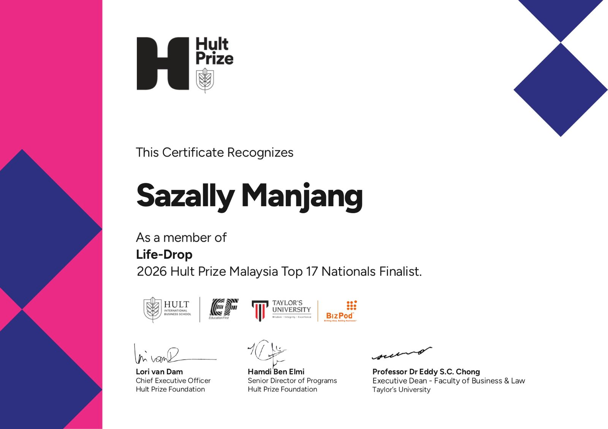
View certificateLife-Drop · Team member · Hult Prize Malaysia
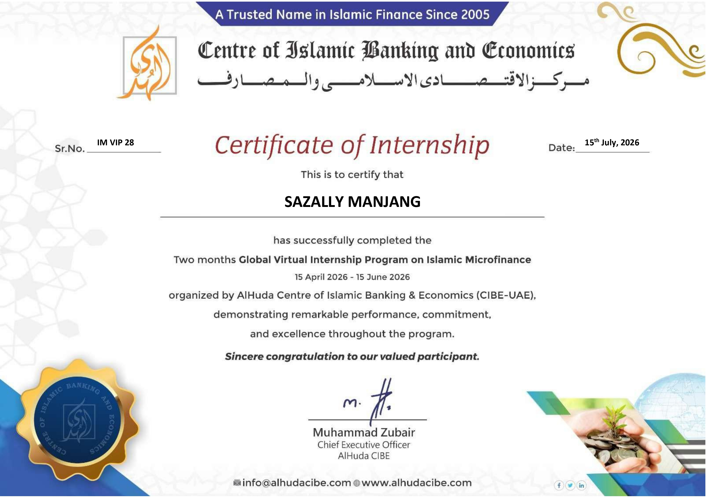
View certificateIslamic Microfinance · AlHuda CIBE
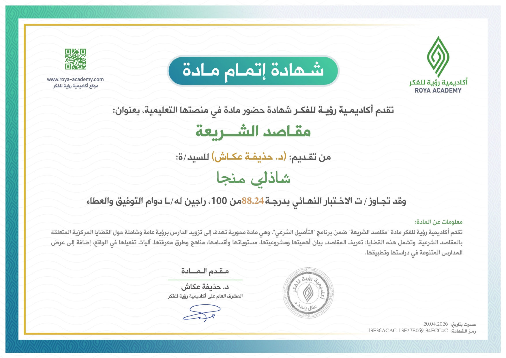
View certificateRoya Academy · April 2026
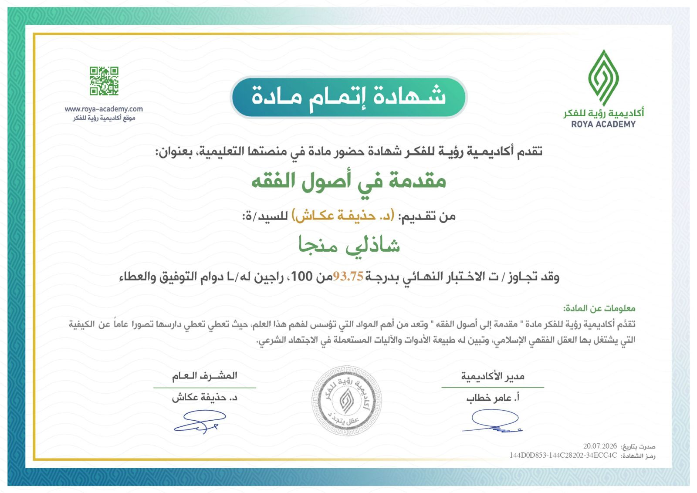
View certificateRoya Academy · July 2026
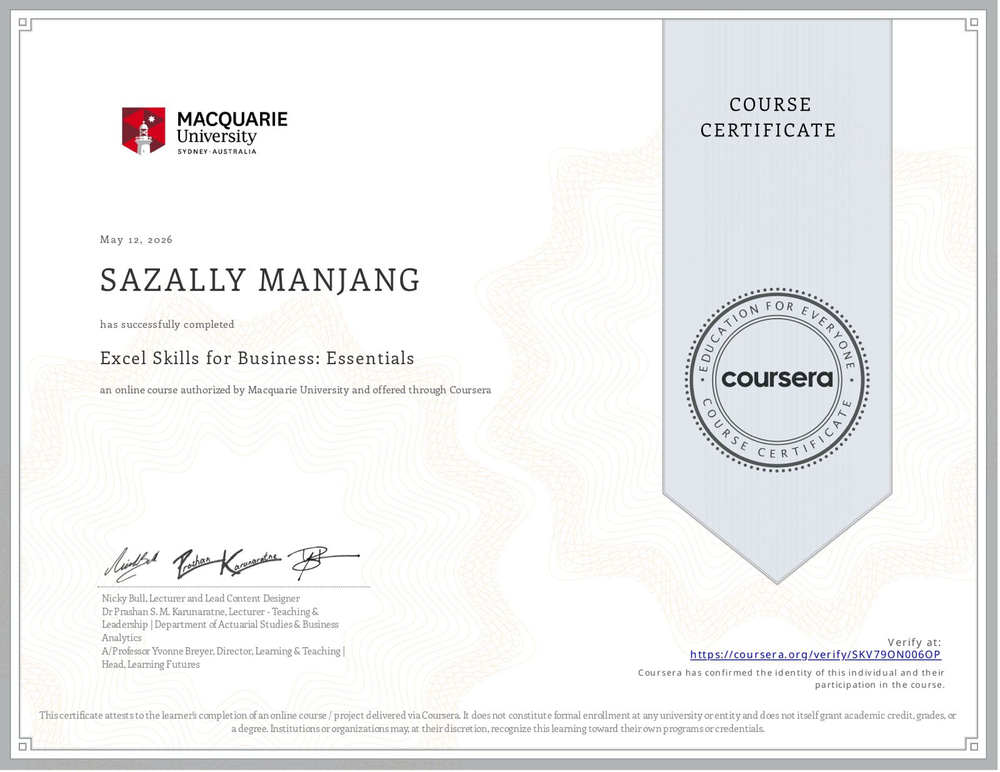
View certificateMacquarie University · May 2026
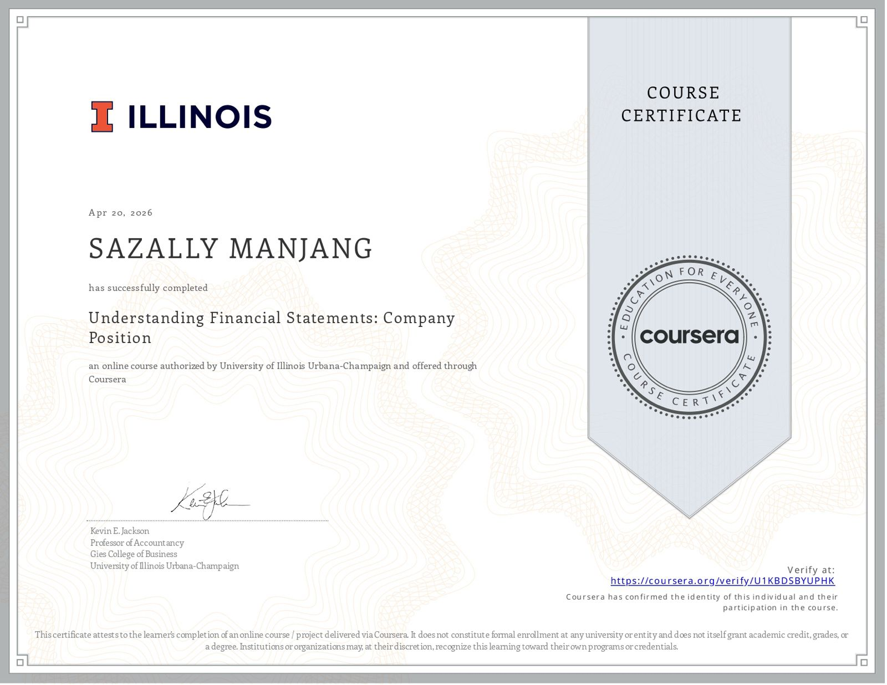
View certificateUniversity of Illinois Urbana-Champaign · April 2026
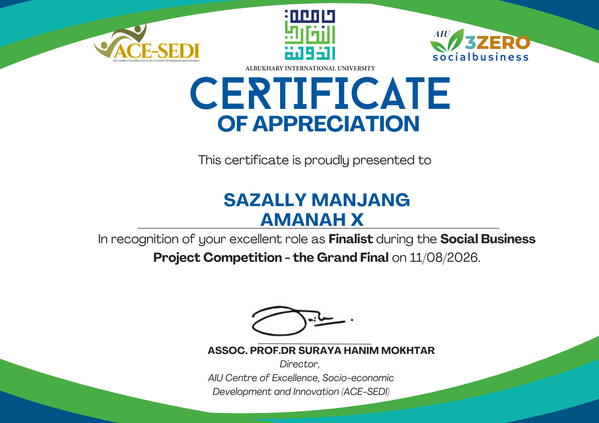
View certificateGrand Final finalist · AIU · August 2026
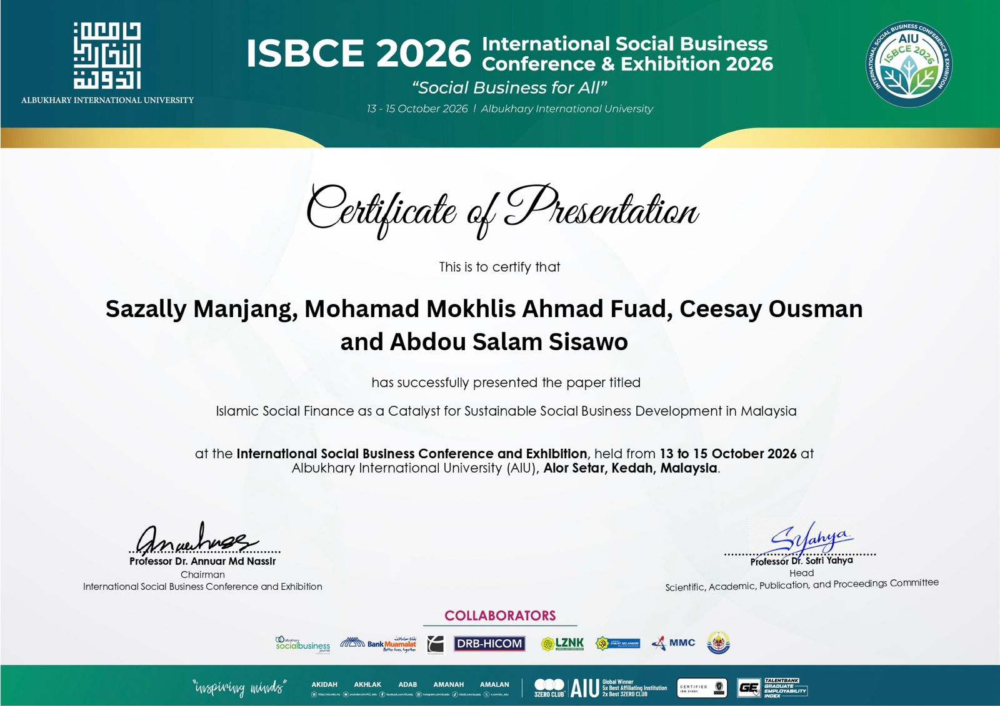
View certificateIslamic Social Finance as a Catalyst for Sustainable Social Business Development in Malaysia
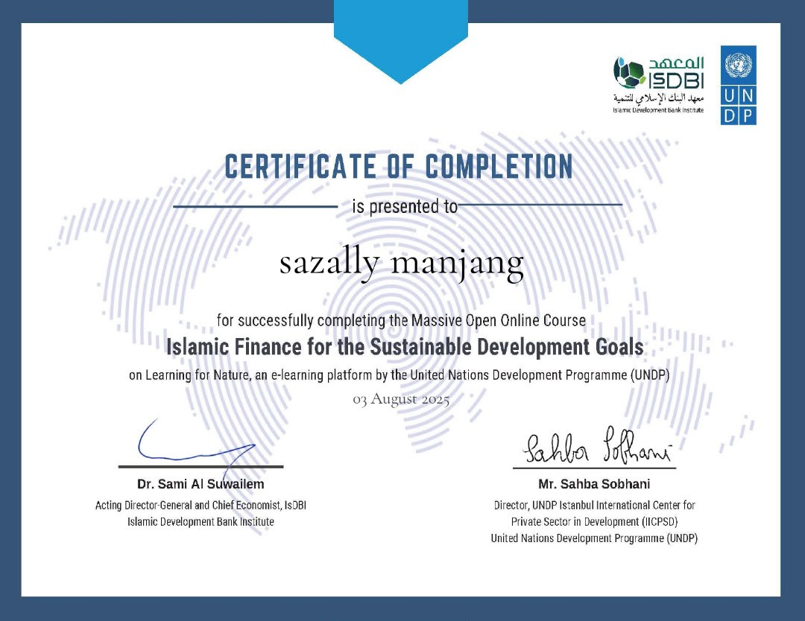
View certificateUNDP & Islamic Development Bank Institute · August 2025
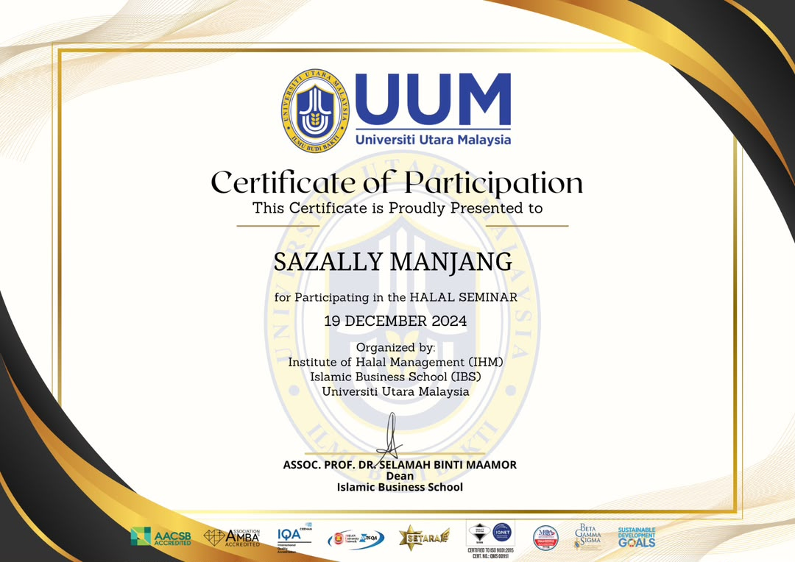
View certificateUniversiti Utara Malaysia · December 2024
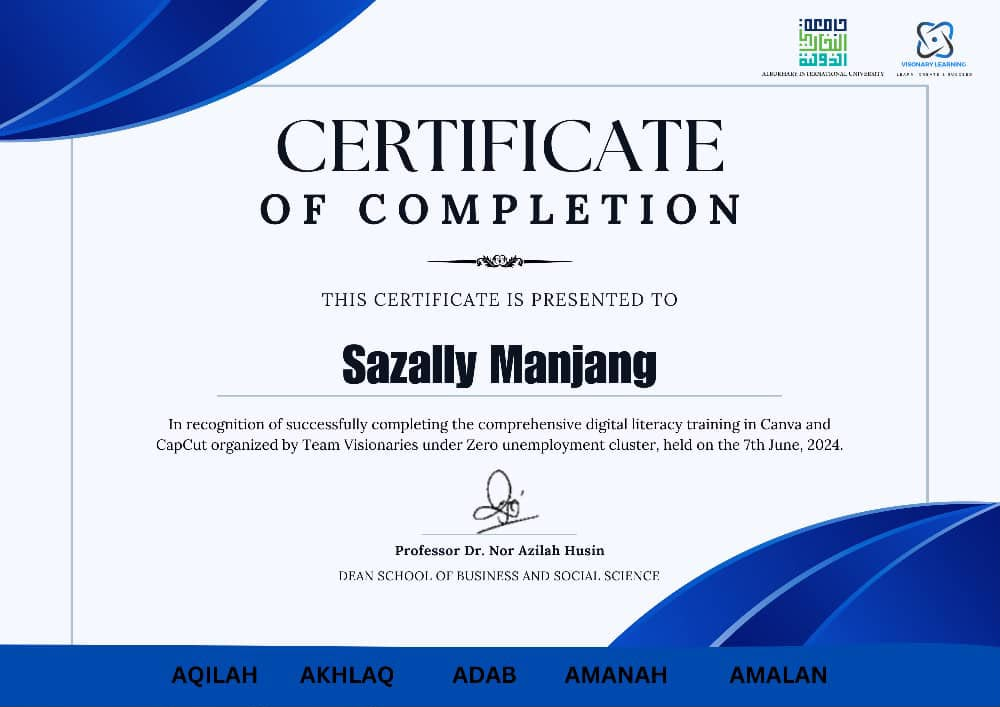
View certificateTeam Visionaries · AIU · June 2024
Interested in research collaborations, Islamic finance initiatives, social entrepreneurship, or student leadership? I'd be glad to connect.